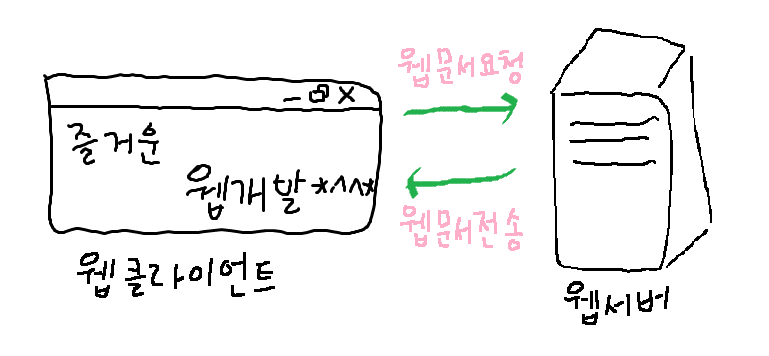

1. 인터넷
웹의 개념이 나오기 전부터 만들어진 컴퓨터 연결 네트워크
컴퓨터마다 고유한 주소를 부여해 컴퓨터를 구분한다
2. 웹(WWW)
: 인터넷을 활용하는 응용 서비스 중 하나
1) 웹의 구성
- 웹 서버
: 웹 사이트를 탑재하는 컴퓨터, 웹 클라이언트의 요청을 받아 웹 문서 전송
- 웹 클라이언트
: 사용자 인터페이스 담당, 웹 서버에 웹 문서를 요청하고 받아 사용자에게 출력
2) 작동

3) HTTP
: Hyper Text Transfer Protocol
4) 웹 브라우저의 종류
: 인터넷 익스플로러, 오페라, 파이어폭스, 크롬 등등
5) 웹 페이지 구성
- 웹 페이지의 구조와 내용 : HTML
- 웹 페이지의 모양과 스타일 : CSS (Cascading Style Sheet)
- 웹 페이지의 행동 및 상호작용 : JavaScript
웹 페이지는 위 세 개의 요소를 분리해 개발한다